Tonosho, Kagawa: things to do, food and stays
Tonosho · Kagawa
Tonosho
Highlighted on the Kagawa map.
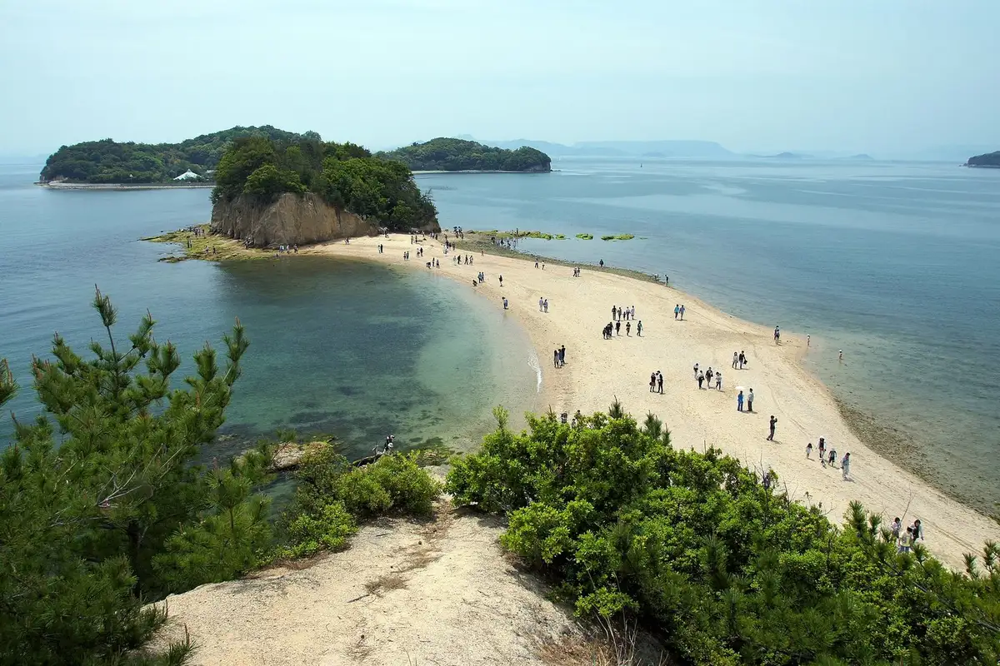
Stay
千年オリーブテラス for your wellness 「The STAY」
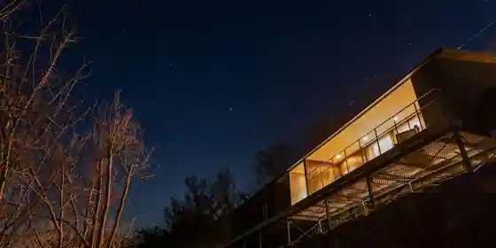
Sennen Oribu Terrace for your wellness (The STAY)
Inn in Kabuto, Tonosho with a retreat concept.
オリビアン小豆島 夕陽ヶ丘ホテル
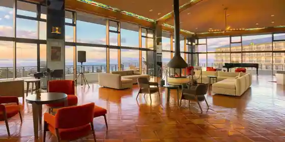
Oribian Shozushima Yuhi Ke Oka Hotel
小豆島国際ホテル
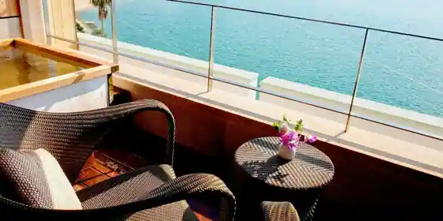
Shozushima Kokusai Hotel
島泊/島飯/島湯
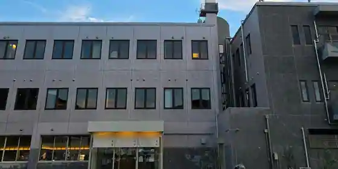
Shima Haku / Shima Meshi / Shima Yu
民宿オアシス
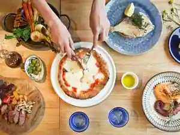
Minshuku Oashisu
囲み宿 こわね
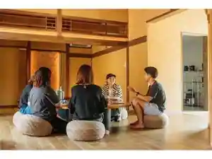
Kakomi Yado Kowane
Inn in Kabuto, Tonosho with a sauna and a renovated traditional house.
天空ホテル 海廬
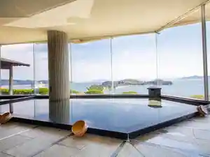
Tenku Hotel Umi Ro
Hotel in Kabuto, Tonosho with scenic views.
Ｌａ Ｋｒａｓｓｅ Ａｎｇｅｌｒｏａｄ
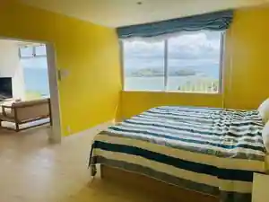
La Krasse Angelroad
La Krasse Angelroad WEST
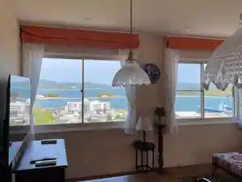
La Krasse Angelroad WEST
ホテルひとみ荘
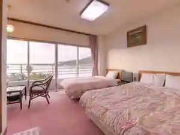
Hotel Hitomi So
Angelroad Hotel
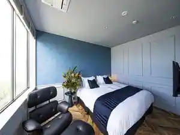
Angelroad Hotel
Inn in Kabuto, Tonosho with one group per day.
喜久家旅館
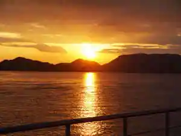
Yoshihisa Ie Ryokan
Dining
島活
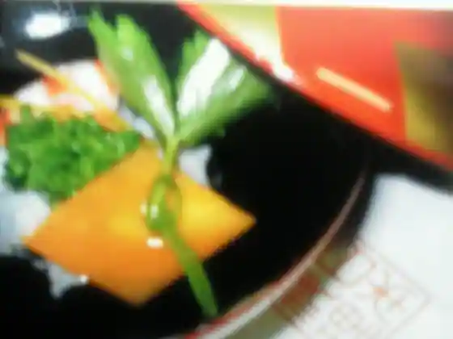
Shima Katsu
ピッツァ カモス
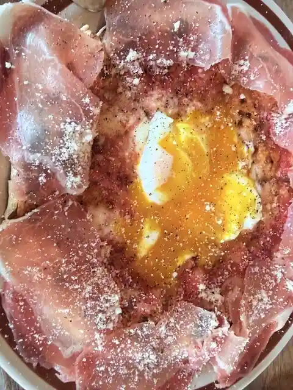
Pittsua Kamosu
別邸 銀四郎
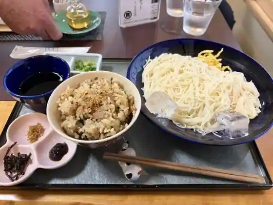
Bettei Gin Shiro
小豆島ラーメンHISHIO 小豆島エンジェルロード店
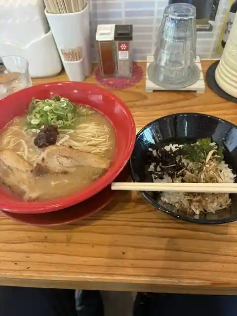
Shozushima Ramen HISHIO Shozushima Enjierurodo
手延べ麺お食事処 銀四郎
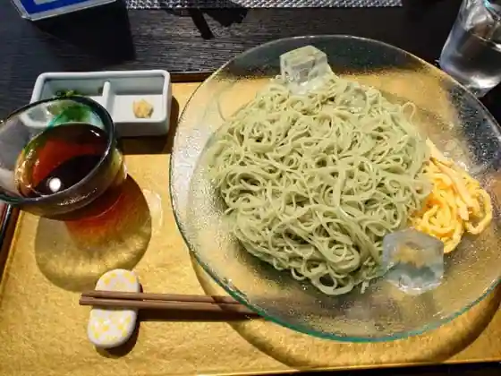
Te Nobe Men O Shokuji Tokoro Gin Shiro
島キッチン
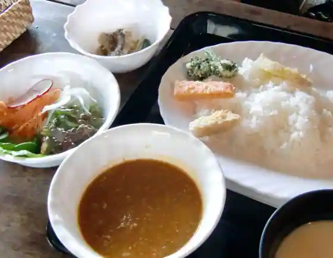
Shima Kitchen
味彩
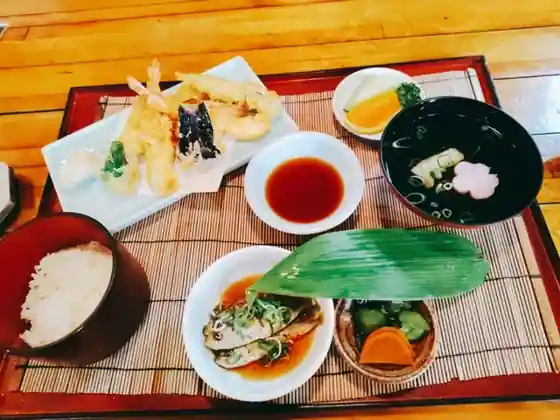
Aji Sai
豊島美術館カフェ
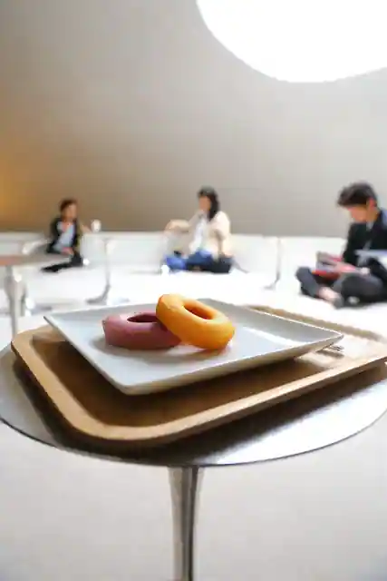
Toyoshima Bijutsukan Cafe
居酒屋 南国
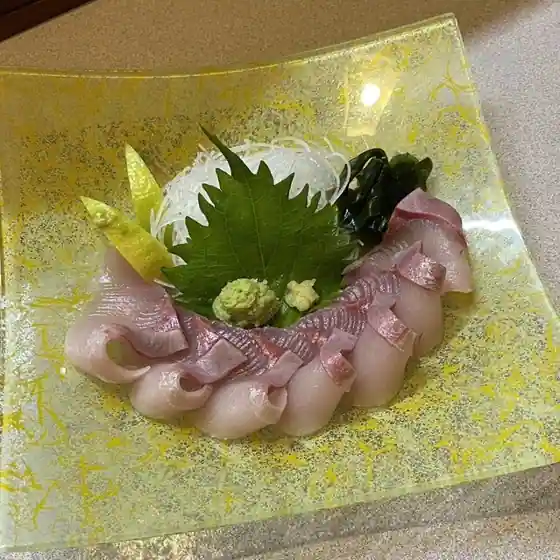
Izakaya Nangoku
土庄港観光センター
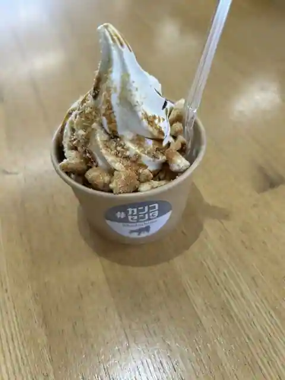
Tonosho Minato Kanko Center
來家
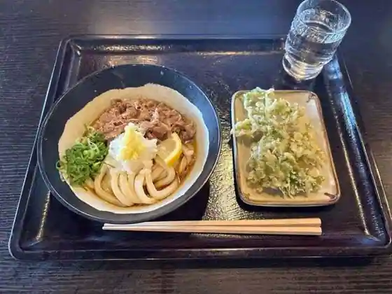
Rai Ie
オアシス
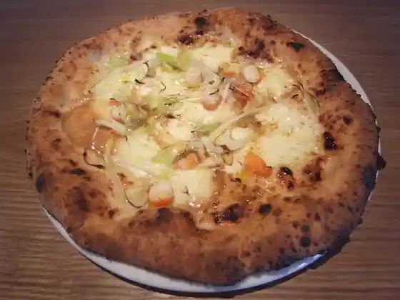
Oashisu
おおみねのうどん屋さん
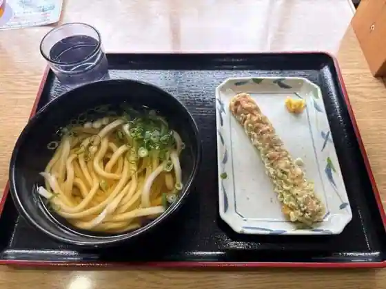
Ominenodon Ya San
宝来軒
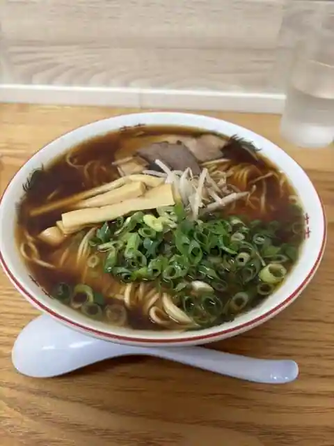
Horai Ken
ドニズ バー
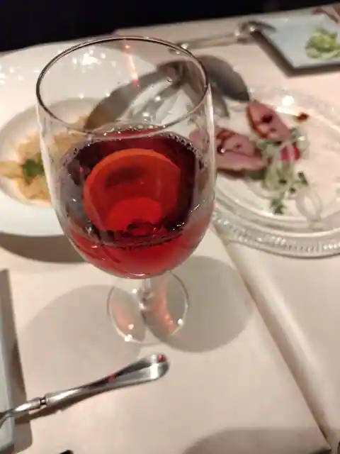
Donizu Bar
オリビアン小豆島
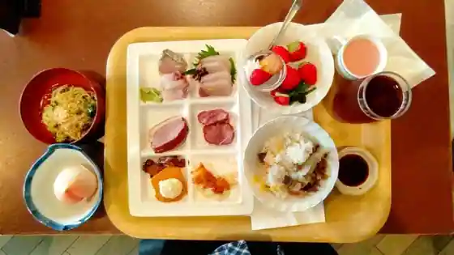
Oribian Shozushima
海のレストラン
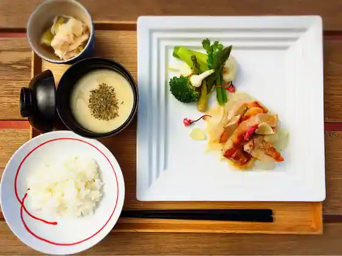
Umi No Restaurant
料理芸術 かりえん
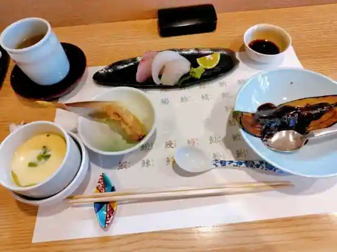
Ryori Geijutsu Karien
いちご家
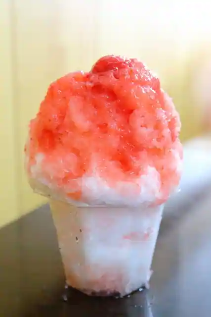
Ichigo Ie
なぎさ
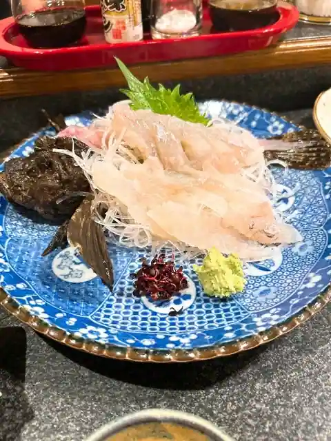
Nagisa
Fine Port Gallery
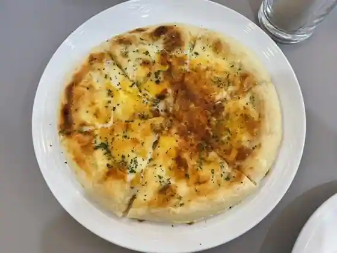
Fine Port Gallery
岡田長栄堂 本店
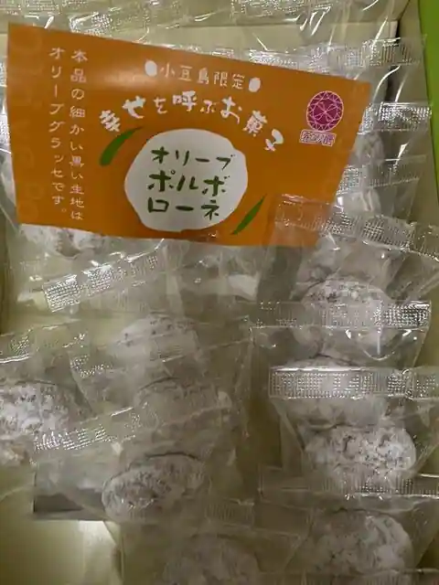
Okada Choei Do Hon
海蘆
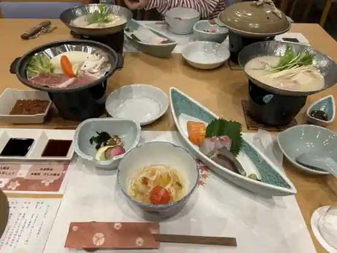
Umi Ashi
Sights
Enjierurodo
Choshi Kei
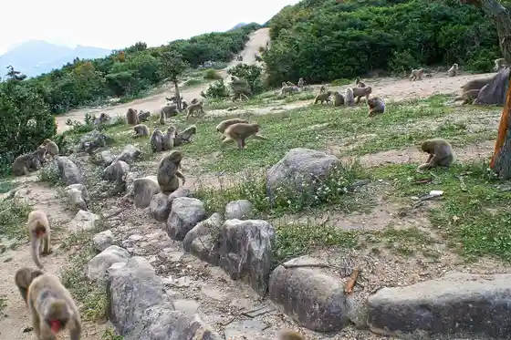
Tonosho Minato
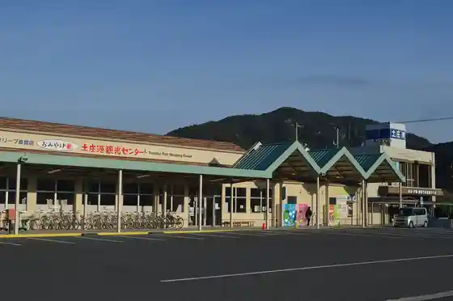
Meiro no Machi
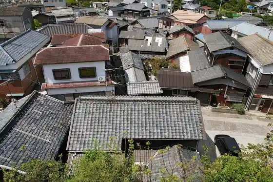
Shozushima Dai Kannon
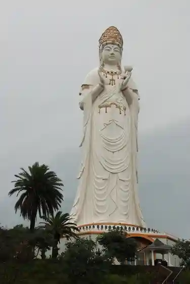
Osaka Shiro Zan Ishi Memorial Park